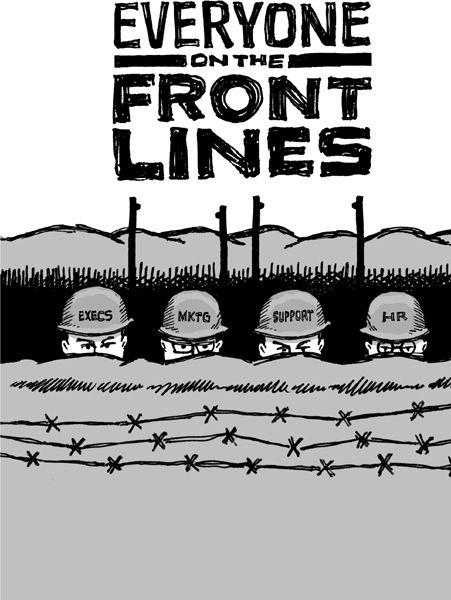

{% include JB/setup %}
{% raw %}
<div>

<h2 id="filepos227203" class="calibre19"><span class="calibre2"><a class="calibre13"></a><strong class="calibre14">How to say you're sorry</strong></span></h2><div class="calibre4"></div>
<p class="calibre7">There's never really a great way to say you're sorry, but there are plenty of terrible ways.</p>
<p class="calibre17">One of the worst ways is the non-apology apology, which sounds like an apology but doesn't really accept any blame. For example, "We're sorry if this upset you." Or "I'm sorry that you don't feel we lived up to your expectations." Whatever.</p>
<p class="calibre17">A good apology accepts responsibility. It has no conditional <em class="italic1">if</em> phrase attached. It shows people that the buck stops with you. And then it provides real details about what happened and what you're doing to prevent it from happening again. And it seeks a way to make things right.</p>
<p class="calibre17">Here's another bad one: "We apologize for any inconvenience this may have caused." Oh, please. Let's break down why that's bad:</p>
<p class="calibre17"><strong class="calibre22">"We apologize ..."</strong> If you spilled coffee on someone while riding the subway, would you say, "I apologize"? No, you'd say, "I'm so, so sorry!" Well, if your service is critical to your customers, an interruption to that service is like spilling hot coffee all over them. So use the appropriate tone and language to show that you understand the severity of what happened. Also, the person in charge should take personal responsibility. An "I" apology is a lot stronger than a "we" apology.</p>
<p class="calibre17"><a class="calibre16"></a><strong class="calibre22">"... any inconvenience ..."</strong> If customers depend on your service and can't get to it, it's not merely an inconvenience. It's a crisis. An inconvenience is a long line at the grocery store. This ain't that.</p>
<p class="calibre17"><strong class="calibre22">"... this may have caused"</strong> The "may" here implies there might not be <em class="italic1">anything</em> wrong at all. That's a classic non-apology apology move. It slights the very real problem(s) that customers are experiencing. If this didn't affect them, you don't really need to say anything. If it did affect them, then there's no need for "may" here. Stop wavering.</p>
<p class="calibre17">So what's the perfect way to say you're sorry? There's no magic bullet. Any stock answer will sound generic and hollow. You're going to have to take it on a case-by-case basis.</p>
<p class="calibre17">The number-one principle to keep in mind when you apologize: How would you feel about the apology if you were on the other end? If someone said those words to you, would you believe them?</p>
<p class="calibre17">Keep in mind that you can't apologize your way out of being an ass. Even the best apology won't rescue you if you haven't earned people's trust. Everything you do before things go wrong matters far more than the actual words you use to apologize. If you've built rapport with customers, they'll cut you some slack and trust you when you say you're sorry.</p>
<p class="calibre3"><a class="calibre16"></a></p><div class="calibre4"></div>
</div>

{% endraw %}

